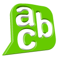

COMPRENSIÓN LECTORA Y REDACCIÓN: LEE, PIENSA Y ESCRIBE
Pasar de leer y escribir de manera mecánica a identificar y aplicar estrategias para la redacción y lectura, formando tu propio pensamiento
GLOSARIO

¡Es hora de recordar lo esencial!
Codificación: Habilidad cognitiva que permite transformar las letras impresas en conceptos con un significado claro o bien, transformar las ideas abstractas de la mente en palabras escritas estructuradas.
Conciencia metacognitiva: Componente de la metacognición que consiste en la capacidad del estudiante para reconocer y saber cuáles son sus propias fortalezas y debilidades al momento de aprender o concentrarse.
Inferencia: Operación cognitiva que consiste en rellenar los huecos de un texto, deduciendo las intenciones del autor y las relaciones implícitas que no están escritas de forma directa.
Integración semántica: Proceso cognitivo que permite conectar de manera lógica las ideas internas que va presentando un texto entre sí, vinculándolas además con los conocimientos previos que ya posee el lector.
Memoria de trabajo: Espacio temporal en el cerebro donde se retiene activamente la información inicial de una frase para que esta mantenga su sentido completo una vez que el estudiante llega al punto final.
Metacognición: Capacidad de "pensar sobre tu propio pensamiento". Es la facultad de mirar el propio proceso de aprendizaje desde afuera, actuando como un observador externo o un entrenador personal para monitorear y evaluar la actividad intelectual.
Decodificación: Proceso cognitivo básico que se encarga del reconocimiento directo de las palabras y frases, sirviendo como la base fundamental sobre la cual se construye el significado del texto.
Planificación: Fase del proceso de escritura enfocada en seleccionar minuciosamente las ideas, definir el tono adecuado y estructurar el formato que tendrá el texto antes de comenzar a redactar.
Procesos cognitivos: Operaciones internas que realiza el cerebro para captar, codificar, almacenar y trabajar activamente con la información; representan las acciones directas que se ejecutan para procesar los datos.
Regulación cognitiva: Componente de la metacognición que consiste en tomar decisiones conscientes y acciones oportunas para corregir el rumbo de la lectura o la escritura cuando se detecta que algo no se está comprendiendo bien.